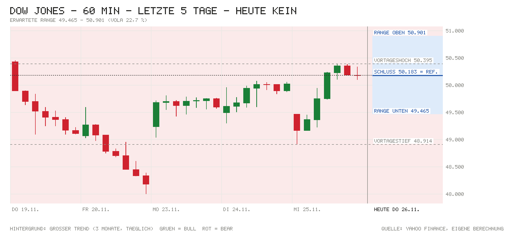

Tagesentscheidung ab 15:33 bis 22:00 Uhr
Heute ist Thanksgiving, die NYSE bleibt geschlossen. Darum gibt es keine Einschätzung bis zum US-Schluss. Der Dow steht unverändert beim Schluss von gestern (50.183). Der Dow-Future handelt verkürzt und liegt bei 50.414 (+0,37 %), Europa erholt sich kräftig (DAX +2,0 %). Am Freitag öffnet die Wall Street um 15:30 Uhr und schließt schon um 19:00 Uhr deutscher Zeit.
- Kurs um 22:32 (25.11.)
- 50.183
- Erwartete Range
- 49.465 – 50.901
- Eingepreist (Ersatz)
- VXD 22,7 %
Heute kein Handel an der NYSE. Die Range ist nur rechnerisch: ±1 σ für einen vollen Handelstag aus dem VXD (ca. 68 %). Eine S&P-500-Tagesoption mit Verfall heute gibt es nicht. Keine Anlageberatung.
Chart

Signale
| Signal | Wirkung | Stand und Einordnung |
|---|---|---|
| Eröffnung & erste Minuten | Neutral | Heute keine Eröffnung (Thanksgiving). Gestern drehte der Dow von 49.470 (Lücke −1,10 %) auf 50.183 (+0,33 %). Das Tief lag bei 48.914, das Hoch bei 50.395. |
| Schwergewichte heute | Neutral | Kein Handel. Die letzten Kurse vom 25.11. ergeben zusammen +208 Pkt.: Sherwin-Williams +52, IBM +48, Visa +47, Home Depot +46. Amazon (−48) und Microsoft (−38) bremsten. |
| US-Daten heute | Neutral | Wegen des Feiertags gibt es heute keine US-Daten. Gestern kamen BIP 4,3 % (Prognose 3,4 %) und Kern-PCE J/J 3,3 % (Prognose 3,2 %). |
| Europa & Asien | Rückenwind | DAX +2,01 %, Euro Stoxx 50 +1,92 %, Nikkei +0,86 %, Hang Seng +1,19 %, Shanghai +0,01 %. Weltweit erholen sich die Märkte. |
| Zinserwartung | Gegenwind | Für die Fed-Sitzung am 9.12. sind 99 % für +25 Bp. eingepreist (impl. 4,13 %), für Januar 61 % und für März 66 % für weitere Erhöhungen. |
| Renditen | Rückenwind | US 2J 4,65 %, 10J 4,86 % (live, Stand 25.11. abends, −4 Bp. vs. 4,90 %). Vor einer Woche stand die 10J bei 5,07 % (offiziell). Der US-Anleihemarkt ist heute geschlossen. |
| Kreditstress | Neutral | FRED liefert keinen Wert. Ersatzweise: HYG +0,12 %, LQD +0,48 % (25.11.). Stress ist nicht sichtbar. |
| Öl & Dollar | Neutral | WTI 84,79 USD (+1,33 %), Brent 91,51 USD (−3,28 %), EUR/USD 1,0987 (+0,22 %). Das Bild ist gemischt, die Vergleichsstände unterscheiden sich. |
| Trend | Gegenwind | 50.183 liegt unter dem 21-Tage- (51.328) und dem 50-Tage-Schnitt (51.582), aber knapp über dem 200-Tage-Schnitt (50.773). Der große Trend steht seit 28.10. auf Bear. |
| Positionierung | Rückenwind | COT 17.11.: Hebel-Fonds sind im S&P-Future netto −234.978 Kontrakte short. Das kann Eindeckungen auslösen, wie gestern ab der Eröffnung. |
| Unternehmensnachrichten | Neutral | Am Feiertag gibt es keine wesentlichen Meldungen von Dow-Werten. Im Kalender stehen keine Quartalszahlen. |
| Profi-Sicht | Gegenwind | ING sieht nach starkem Wachstum und hoher Inflation weitere Fed-Erhöhungen. Laut Rates Spark fehlt vor Thanksgiving der Risikoappetit. |
| Termine im Fenster | Neutral | NYSE geschlossen. CME-Aktienfutures pausieren ab 19:00 Uhr und öffnen um Mitternacht wieder. Freitag: verkürzter Handel von 15:30 bis 19:00 Uhr. |
Dow-Werte heute
| Aktie | Mi. 25.11. | Beitrag |
|---|---|---|
| Sherwin-Williams | +2,40 % | +52 Pkt. |
| Amazon | −3,12 % | −48 Pkt. |
| IBM | +3,33 % | +48 Pkt. |
| Visa | +1,83 % | +47 Pkt. |
| Home Depot | +2,14 % | +46 Pkt. |
| Microsoft | −1,25 % | −38 Pkt. |
| Nvidia | −3,91 % | −37 Pkt. |
| Travelers | +1,49 % | +37 Pkt. |
| Summe aller 30 Werte | +208 Pkt. |
Heute wird nicht gehandelt. Die Kurse stammen vom 25.11. (Yahoo, inkl. nachbörslicher Kurse, deshalb weicht die Summe vom Index-Plus von +164 Pkt. ab). Beitrag = Kursänderung ÷ Dow-Divisor (aus den Kursen berechnet, 0,16308). Die Dow-Liste im Skript hat den Stand Nov. 2024.
Großer Trend (3-Monats-Momentum)
- Stand
- Bear
- Seit
- 28.10. (5 Wechsel in 3 Monaten)
- Schluss 25.11.
- −6,32 % vs. Zins +1,00 %
- Dreht bei Schluss über
- 54.097 (jetzt −7,24 %)
Heute gibt es keinen Schluss. Die nächste Entscheidung fällt am Freitag zum verkürzten Schluss, und das Signal bleibt klar Bear. Bull = Rendite der letzten 3 Monate über dem Geldmarktzins, Bear = darunter. Regel: Rendite der letzten 63 Handelstage (≈ 3 Monate) gegen die 13-Wochen-T-Bill (^IRX, jetzt 4,16 %), jeden Tag zum Schluss neu entschieden, Zeitrahmen Tageskerzen (nach Antonacci 2014, dort monatlich über 12 Monate; täglich entschieden dreht es öfter falsch). Keine Anlageberatung.
Bilanz der letzten Entscheidung
25.11.: Short mit 5/10 ab 49.178. Die Richtung war falsch: Der Dow drehte nach oben und schloss bei 50.183, das sind 1.005 Punkte gegen die Einschätzung (Hoch 50.395, Tief 48.914). Die Range von ±533 wurde verfehlt. Seit Start gab es 15 Einschätzungen. Die Richtung stimmte in 53 % der Fälle, in Summe ergeben sich −1.352 Punkte bis Schluss (Schnitt −90). Die Range wurde bisher an 40 % der 15 Tage getroffen (Soll ca. 68 %).
Marktlage
| Markt | Stand | Veränderung |
|---|---|---|
| Dow Jones (Schluss 25.11.) | 50.182,95 | +0,33 % |
| Dow (Eröffnung heute) | n/v (geschlossen) | n/v |
| Dow (jetzt, Kurs zur Notiz) | 50.183 (Schluss 25.11.) | – |
| S&P 500 (Schluss 25.11.) | 7.182,78 | −0,25 % |
| Nasdaq 100 (Schluss 25.11.) | 26.046,90 | −0,64 % |
| US-Futures (S&P / Nasdaq) | 7.238,25 / 26.246,50 | +0,59 % / +0,56 % |
| Dow-Future | 50.414 | +0,37 % |
| DAX (aktuell) | 25.199,62 | +2,01 % |
| Euro Stoxx 50 (aktuell) | 6.007,72 | +1,92 % |
| EUR/USD | 1,0987 | +0,22 % |
| WTI (USD/Barrel) | 84,79 | +1,33 % |
| Brent (USD/Barrel) | 91,51 | −3,28 % |
| Gold (USD/Unze) | 3.599,30 | +1,80 % |
| VIX | 27,12 | −4,14 % |
| VXD (Schluss 25.11.) | 22,72 | +4,08 % |
Stände von 15:34 Uhr (Yahoo, bis 15 Min. verzögert). NYSE und US-Anleihemarkt sind wegen Thanksgiving geschlossen, die CME-Futures handeln verkürzt. WTI und Brent beziehen sich auf unterschiedliche Vortagesstände. Steigendes Öl und steigende Volatilität sind rot markiert, fallende grün.
Anleihen & Zinsen
| Kennzahl | Stand | Veränderung |
|---|---|---|
| US-Treasury 2J (live, 25.11. abends) | 4,65 % | n/v |
| US-Treasury 10J (live, 25.11. abends) | 4,86 % | −4 Bp. (vs. 4,90 %) |
| Fed nächste Sitzung (9.12.) | 99 % für +25 Bp. (impl. 4,13 %) | Erhöhung voll eingepreist |
| Fed-Zielband | 3,75–4,00 % (EFFR 3,88 %) | zuletzt +25 Bp. am 17.9. |
| US-Hochzins (HYG, Ersatz) | 76,52 USD | +0,12 % (25.11.) |
| Investment Grade (LQD, Ersatz) | 104,29 USD | +0,48 % (25.11.) |
Die Risikoaufschläge von FRED lagen nicht vor. Ersatzweise stehen hier die ETFs HYG und LQD (nur Tagesveränderung, Wochenwert n/v). Offizielle Kurve 25.11.: 2J 4,61 %, 10J 4,85 % (vor einer Woche 5,07 %). Heute kein US-Anleihehandel.
Termine heute (deutsche Zeit)
- ganztags USA: Thanksgiving – NYSE, Nasdaq und Anleihemarkt geschlossen, keine US-Daten
- 19:00 CME-Aktienfutures pausieren (Wiederöffnung 00:00 Uhr)
- Fr 15:30 Wall Street öffnet wieder (verkürzter Handel)
- Fr 19:00 Verkürzter US-Börsenschluss (13:00 Uhr New York). Keine Quartalszahlen von Dow-Werten im Kalender.
Nachrichten zu Dow-Werten
- Gesamtmarkt: Gestern drehte der Dow nach einer Lücke von −1,1 % noch ins Plus (+0,33 %, Tagesspanne fast 1.500 Punkte). Nasdaq 100 (−0,64 %) und S&P 500 (−0,25 %) blieben im Minus. Einschätzung (eigene): Eindeckungen vor dem langen Wochenende. Die Erholung ist bisher eine Gegenbewegung im Bear-Trend.
- Sherwin-Williams, Home Depot, Visa, IBM: +1,8 bis +3,3 %, sie trugen die Erholung. Eine eigene Meldung fand sich nicht. Einschätzung (ohne Quelle): Umschichtung aus Tech in Konsum-, Bau- und Finanzwerte.
- Amazon, Microsoft, Nvidia: −3,1 %, −1,3 % und −3,9 %. Der Druck auf KI- und Cloud-Werte hält an. Einschätzung: negativ für den Nasdaq, für den Dow weniger stark, weil diese Werte im Index weniger Gewicht haben.
Profi-Sicht & Positionierung
- ING THINK: Laut „Strong growth and elevated inflation signal more Fed tightening“ sprechen starkes Wachstum und hohe Inflation für weitere Fed-Erhöhungen. Der Rates Spark („No risk appetite for Thanksgiving dinner“) sieht vor dem Feiertag wenig Risikobereitschaft. Der Commodities Feed meldet einen weiteren Anstieg beim Öl und eine Erholung bei Kupfer.
- Positionierung (COT, Stand 17.11.): Hebel-Fonds sind im S&P-Future netto −234.978 Kontrakte short (Short-Abbau um 68.082), Vermögensverwalter netto +895.049. In 10J-Treasuries sind Hebel-Fonds netto −2,48 Mio. Kontrakte short.
Quellen
- Marktdaten (Skript
marktdaten.mjs): Yahoo Finance (Kurse, Dow-Werte, VXD, ^IRX), Nasdaq (Kalender, Optionskette SPY), US-Live-Kurve, Bundesbank, U.S. Treasury, Fed-Pfad über Amber Terminal, CFTC, ING THINK - QuantVPS: Market hours Thanksgiving (NYSE geschlossen, CME-Futures verkürzt)
- Tiger Brokers: US Stock Markets Closed for Thanksgiving, Early Closure on Friday
- ING THINK: Strong growth and elevated inflation signal more Fed tightening
- ING THINK: Rates Spark – No risk appetite for Thanksgiving dinner
- ING THINK: The Commodities Feed – Oil extends rally as copper rebounds